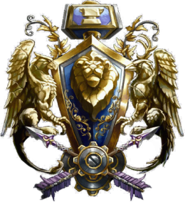
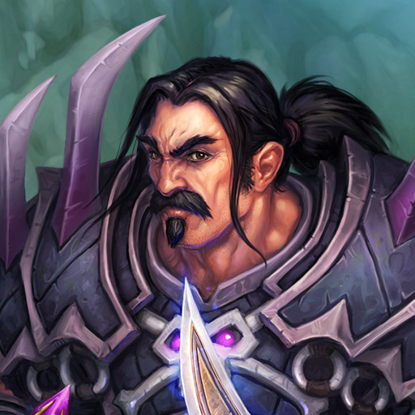
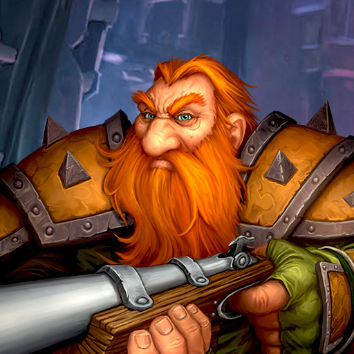
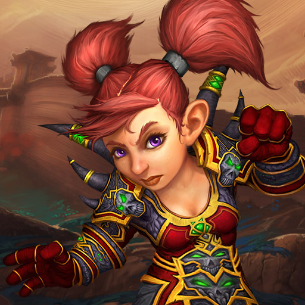
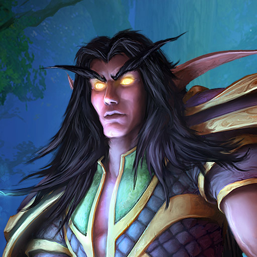
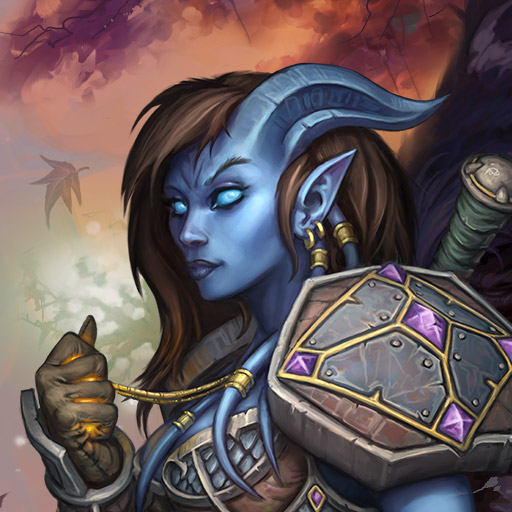
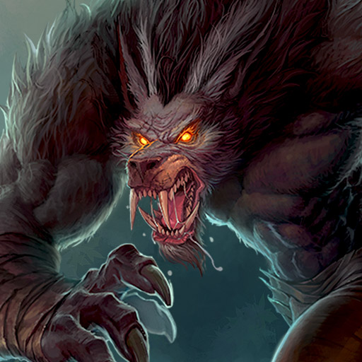

La Alianza
La Alianza (también conocida como Gran Alianza) es una de las dos facciones políticas más numerosa de las razas de Azeroth, en contrapartida a la Horda. La Alianza abarca una gran cantidad de poderosas culturas y grupos unidas no por la desesperación o la necesidad, sino por un profundo compromiso con conceptos abstractos como la nobleza y la justicia, y tratando de representar a estos altos ideales, pese a su diversidad de pueblos, todos contribuyen con su sabiduría técnica, arca y espiritual hacia el objetivo de un mundo justo y en paz. La lealtad y el idealismo de la Alianza de Lordaeron fueron una inspiración para la nueva Alianza de hoy en día. La actual organización tiene el grueso de sus fuerzas en el norte de Kalimdor (Darnasus) y el sur de los Reinos del Este (Khaz Modan y Ventormenta). Algunos de los antiguos miembros de la anterior Alianza son miembros de la actual Gran Alianza.
Los Humanos
Defensores del reino
Recientes descubrimientos han demostrado que los humanos descienden de los bárbaros vrykul, guerreros semigigantes que viven en Rasganorte. Los primeros humanos fueron esencialmente un pueblo segregado y tribal durante varios miles de años, hasta que la fuerza creciente del Imperio trol los obligó a unificarse. Así fue como se formó la nación de Arathor, junto con su capital, la ciudad estado de Strom.
Historia de los humanos
Tras siglos de paz, las ciudades estado de Arathor, cada vez más independientes, se dividieron en reinos: al oeste, Gilneas; al noroeste, Alterac, Dalaran y Lordaeron; al suroeste, Kul Tiras; y al extremo sur, Ventormenta. Strom pasó a llamarse Stromgarde y siguió siendo un poderoso reino. No obstante, la Horda de los orcos llegó a Azeroth y redujo Ventormenta a escombros. Los supervivientes de la ciudad, entre los que se hallaba el joven príncipe Varian Wrynn, huyeron a Lordaeron, donde los líderes de los siete reinos decidieron volver a unirse como la Alianza de Lordaeron. Juntos, consiguieron derrotar a la Horda, pero la paz de la Alianza resultó ser efímera. Con motivo del encarecimiento de la manutención, Gilneas y Stromgarde renunciaron a sus reinos de la Alianza, tras lo cual llegó una plaga que se cobró la vida de miles de humanos y los convirtió en siervos no-muertos del Rey Exánime. El Rey Exánime manipuló a Arthas Menethil, el príncipe de Lordaeron, para matar a su propio padre e ir a Rasganorte, donde se fusionó con su amo y se convirtió en el siguiente Rey Exánime. Durante los cinco años siguientes, Arthas permaneció en Rasganorte urdiendo su plan y ampliando su ejército. Sin embargo, antes de que Arthas pudiera desatar el poder que había acumulado, los humanos y otras razas aunaron fuerzas y obtuvieron una dura victoria. Miembros de la Horda y la Alianza iniciaron campañas independientes en Rasganorte, y su tentativa propició la derrota del Rey Exánime. El reino de Ventormenta se ha convertido en el bastión más poderoso de la humanidad y en la mayor fuerza de la ya multirracial Alianza. Ahora, el pueblo de Ventormenta se rige por los principios del honor y de la justicia, con los que defiende sus asentamientos y a sus aliados.
Los Enanos
Exploradores resistentes
Los audaces y valientes enanos son una antigua raza descendiente de los seres terráneos de piedra viviente creados por los titanes cuando el mundo era joven. A causa de una extraña enfermedad conocida como «la maldición de la carne», los progenitores terráneos de los enanos sufrieron una transformación que convirtió su tez pétrea en piel carnosa. Estas criaturas de carne y hueso se autodenominaron «enanos», y esculpieron la grandiosa ciudad de Forjaz en los picos nevados de Khaz Modan.
Historia de los enanos:
Durante muchos años, tres clanes enanos —los Barbabronce, los Martillo Salvaje y los Hierro Negro— vivieron unidos en Forjaz bajo el sabio reinado del rey Modimus Yunquemar. Cuando Modimus falleció, las tensiones entre los clanes se desataron y estalló una guerra por el control de la ciudad. Así dio comienzo la Guerra de los Tres Martillos, un violento conflicto que se alargó varios años, durante los cuales el clan Barbabronce obtuvo el control absoluto de Forjaz; una vez en el poder, se desentendió de los demás clanes y expulsó a sus rivales. Sin embargo, un reciente giro del destino ha vuelto a reunir a los clanes en Forjaz tras siglos de separación... Durante los desastres naturales que fustigaron Azeroth justo antes del Cataclismo, las tierras de los enanos tampoco quedaron indemnes. Una serie de terremotos sacudieron las zonas de alrededor de Forjaz y redujeron los asentamientos a escombros, cobrándose la vida de muchos enanos inocentes. A fin de reunir respuestas acerca del preocupante estado del mundo, el rey Magni se sometió a un ritual místico para entrar en comunión con la tierra. No obstante, la ceremonia tuvo un efecto inesperado: Magni se convirtió en diamante y se fusionó con las profundidades de la propia Forjaz. En el consiguiente vacío de poder, Moira, su distante hija, que se había casado con el líder del odiado clan Hierro Negro, recuperó brevemente el trono de Forjaz y consiguió implantar un bloqueo en la ciudad. De no ser por la intervención del rey Varian Wrynn de Ventormenta y de su hijo, el príncipe Anduin, sus actos podrían haber desencadenado otra guerra civil. Desde entonces, con el apoyo de Varian, el control de Forjaz se ha dividido equitativamente entre los clanes Barbabronce, Martillo Salvaje y Hierro Negro mediante la implantación del Consejo de los Tres Martillos. Los clanes dejaron de lado sus rencillas para trabajar juntos, y la capacidad del Consejo para gobernar como uno solo resulta prometedora.
Los Gnomos
Habilidosos y curiosos
Los inteligentes, valientes y a menudo excéntricos gnomos representan una paradoja única entre las razas civilizadas de Azeroth. Esta raza de brillantes inventores y de una alegría incontenible ha sufrido traiciones, segregaciones y casi el genocidio. Su extraordinario optimismo ante tales calamidades simboliza el espíritu verdaderamente resuelto de los gnomos.
Historia de los Gnomos:
Los diminutos gnomos —reputados mecánicos, ingenieros, técnicos y manitas— han dejado huella en Azeroth gracias a su inteligencia colectiva y a su ambición, hasta el punto de eclipsar a sus coetáneos de mayor tamaño. Aunque se sabe poco acerca de su historia antes de la Segunda Guerra, su filosofía y sus conocimientos se centran en conceptos progresistas y llenos de inventiva. No obstante, sucesos recientes han desvelado pruebas de que se fueron creaciones de los titanes; eran ayudantes mecánicos que contrajeron la maldición de la carne, tras lo cual se transformaron en los gnomos de hoy en día. Fue siglos más tarde, cuando los enanos los descubrieron, que se reconoció a los gnomos como una raza valiosa e importante. Los enanos quedaron impresionados ante el ingenio y la rapidez de sus pequeños «parientes» (ellos también habían sido forjados por los titanes y habían sufrido una maldición similar), por lo que ayudaron a los gnomos a construir Gnomeregan, su capital, en las estribaciones de Dun Morogh, cerca de Forjaz, la capital de los propios enanos. Desde su maravillosa ciudad tecnológica, los gnomos ofrecieron un apoyo de valor incalculable con armas, vehículos y vigorosas tropas a la Alianza de los enanos, los humanos y los elfos nobles. Sin embargo, en la invasión de la Legión Ardiente durante la Tercera Guerra, los gnomos se negaron inexplicablemente a enviar ayuda a sus aliados. La Alianza no descubrió la razón de su retirada hasta que la guerra hubo terminado: una amenaza ancestral había despertado en las entrañas de Azeroth para atacar Gnomeregan. Conscientes de que la prioridad de sus aliados era derrotar a la Legión Ardiente, los gnomos decidieron hacerle frente solos. Aunque combatieron con valor para salvar a su querida ciudad, Gnomeregan cayó. La mayor parte de la raza gnómica fue aniquilada en la caída de Gnomeregan; hay quien dice que un 80% de los gnomos de Azeroth sucumbieron durante aquellos horribles días. Los pocos supervivientes huyeron y establecieron Nueva Ciudad Manitas, donde, poco a poco, fueron reconstruyendo sus tropas, sanando sus heridas y preparándose para recuperar Gnomeregan.
Los Elfos de la noche
Guardianes Venerables
Los ancestrales y recluidos elfos de la noche han desempeñado un papel fundamental en la forja del destino de Azeroth. Los elfos de la noche actuales todavía recuerdan la Guerra de los Ancestros de hace más de 10 000 años, cuando frustraron la primera invasión de Azeroth a manos de la Legión Ardiente. Siglos después, cuando los remanentes de la Legión se unieron a los viles sátiros, los elfos de la noche volvieron a hacer frente a la amenaza y terminaron venciendo a las fuerzas dispuestas a sembrar el caos en su mundo.
Historia de los elfos de la noche:
La aparición de la Legión había cambiado para siempre la sociedad de los elfos de la noche. Tyrande Susurravientos y Malfurion Tempestira, sus líderes, promovieron una civilización pacífica y rechazaron el uso de la magia Arcana, que fue lo que, en primer lugar, atrajo a la Legión a Azeroth. Sin embargo, la tranquilidad de los elfos de la noche fue perturbada una vez más cuando la Legión y su terrorífica Plaga de no-muertos orquestó una nueva invasión de Azeroth en los tiempos modernos: un conflicto conocido como la Tercera Guerra. Los elfos de la noche lucharon junto a la Horda y la Alianza para derrotar a la Legión, pero la victoria fue posible únicamente con una explosión que dañó el bendito Árbol del Mundo, el cual, desde tiempos inmemoriales, había concedido a los elfos de la noche inmortalidad y protección contra el envejecimiento y las enfermedades. Hubo druidas desertores que, desoyendo las advertencias de Malfurion, crearon un nuevo Árbol del Mundo con la esperanza de recuperar la inmortalidad de los elfos de la noche. Desgraciadamente, este nuevo Árbol del Mundo acabó por corromperse a causa de un mal oscuro llamado la «Pesadilla Esmeralda», la cual los elfos de la noche pudieron combatir gracias a la ayuda de Malfurion. Aunque los elfos de la noche todavía deben asumir la pérdida de su inmortalidad, el destino de Azeroth depende de su resistencia y su voluntad para ayudar a otras razas, cualidades que la Legión Ardiente no dudará en volver a poner a prueba.
Los Draenei
Exiliados espirituales
Mucho antes de que el titán caído Sargeras desatara la Legión sobre Azeroth, conquistó el mundo de Argus junto con sus moradores: los eredar. Convencido de que esta superdotada raza jugaría un papel fundamental en su afán de destruir la creación, Sargeras contactó con los líderes de los eredar —Kil'jaeden, Archimonde y Velen— y les ofreció poder y conocimiento a cambio de su lealtad.
Historia de los draenei:
Velen fue el único en abstenerse puesto que había tenido una visión. En ella, los suyos se transformaban en demonios, en miembros de la Legión Ardiente de Sargeras, un ejército creciente de una maldad inefable. Con la ayuda de los benévolos naaru, Velen reunió a los eredar que pensaban como él y huyeron de Argus. Estos desertores se hicieron llamar «draenei» o «los exiliados». Kil'jaeden, enfurecido por la huida de Argus de los draenei y su negativa al ofrecimiento de Sargeras, dirigió las tropas de la Legión a la caza de sus antiguos congéneres por todo el cosmos. No obstante, los draenei eludieron a sus perseguidores y se refugiaron en un remoto mundo que llamarían Draenor. Allí, los draenei desarrollaron una sociedad extraordinaria y coexistieron en paz con los orcos chamánicos nativos del planeta de Draenor. Con el tiempo, Kil'jaeden encontró Draenor y corrompió a los nobles orcos para convertirlos en un único y sanguinario ejército: la Horda. Cegada por la ira, la Horda masacró a gran parte de la raza draenei, y los supervivientes se vieron obligados a ocultarse. Muchos draenei, tras exponerse a energías viles manipuladas por brujos orcos, mutaron en seres deformes conocidos como «krokul» o «Tábidos». Años más tarde, el chamán Ner'zhul abrió unos portales mágicos por todo Draenor, y la energía resultante fracturó el moribundo mundo. Lo que quedó de Draenor, conocido a partir de entonces como Terrallende, se convirtió en un campo de batalla para la Legión Ardiente y otras facciones en disputa por el control del asolado paraje. Para huir del caos, Velen y varios de sus seguidores tomaron El Exodar, una fortaleza dimensional. Los draenei abandonaron Terrallende en busca de nuevos aliados. Sin embargo, los elfos de sangre habían saboteado los motores del Exodar, y los draenei tuvieron que realizar un aterrizaje forzoso en el mundo de Azeroth, donde juraron lealtad a la Alianza. Junto con sus nuevos aliados, Velen y sus refugiados volvieron a Terrallende y derrotaron a sus rivales demoníacos, pero Velen tuvo otra visión: se acercaba una guerra entre las fuerzas de la luz y de la oscuridad. Ahora, los draenei se preparan para defender Azeroth, su nuevo hogar, de una sombra que creen que no tardará en llegar.
Huargen
Reclusos malditos
Tras la formidable Muralla de Cringrís, una terrible maldición se extendió por la aislada nación humana de Gilneas y transformó a muchos de sus valientes ciudadanos en espeluznantes bestias lobunas conocidas como «huargen». Los eruditos humanos debatieron ampliamente el origen de la maldición, hasta que se descubrió que los primeros huargen no eran pesadillas de otra dimensión, tal y como se creía, sino elfos de la noche druidas malditos.
Historia de los huargen:
Hace mucho tiempo, durante una cruenta guerra en Kalimdor entre elfos de la noche y sátiros demoníacos, un grupo de druidas practicaba la habilidad de transformarse en poderosas pero indómitas formas que encarnaban la furia de Goldrinn, el ancestro lobo. El objetivo de estos druidas de la manada, adoctrinados por Ralaar Colmillo de Fuego, era blandir la Guadaña de Elune, un artefacto místico, para templar la incontrolable ira inherente de sus formas. Sin embargo, en lugar de aplacar la furia de los druidas, la Guadaña transformó a Ralaar y a sus seguidores en huargen, bestias humanoides esclavizadas por sus propios instintos primigenios. Los druidas de Ralaar atacaron a aliados y a enemigos por igual. Los elfos de la noche heridos por las bestias contrajeron una virulenta maldición que también los convirtió en huargen. Desesperado por contener la enfermedad, el archidruida Malfurion Tempestira desterró a los huargen a una parte del Sueño Esmeralda, el mundo de los espíritus de Azeroth, donde dormirían en paz para siempre. La amenaza de los huargen quedó contenida durante miles de años, hasta que el archimago Arugal despertó a las lobunas bestias del Sueño. Convocados por el rey Genn Cringrís, los huargen se enfrentaron a las tropas de la Plaga que amenazaban el reino de Gilneas. Aun así, las ferales criaturas no tardaron en extender su maldición por la población humana, e infectaron a los soldados gilneanos que había apostados al otro lado de la Muralla de Cringrís. Los elfos de la noche, quienes se sentían responsables del origen de la maldición y de los estragos que esta provocó, decidieron ayudar a los gilneanos. Con la Guadaña de Elune, los elfos de la noche no pudieron curar la afección de forma permanente, pero lograron enseñar a los gilneanos a controlarla: estos aprendieron a cambiar a voluntad de forma humana a huargen y viceversa. Ahora, estos autodisciplinados huargen se han reincorporado a la Alianza como poderosos aliados, listos para luchar por su humanidad y su lugar en la sociedad.
Los pandaren (Alianza / Horda / Neutral)

Los pandaren son actualmente la unica raza del juego que puede pertenecer a cualquiera de las dos facciones o a ninguna de ellas.
Nómadas harmoniosos
Envueltos en mitos y leyendas, los enigmáticos y peculiares pandaren han sido desde hace eones un misterio para las demás razas de Azeroth. La noble historia del pueblo pandaren se remonta miles de años atrás, mucho antes de los imperios del hombre e incluso del cataclismo del mundo.
Historia de los pandaren
Los pandaren, moradores de una tierra fértil y maravillosa, fueron el pueblo oprimido de una monstruosa raza de antiguos señores de la guerra conocida como los «mogu». Gracias a su tenacidad, su diplomacia y una forma única de combate sin armas, los pandaren organizaron una rebelión que derrocó a los mogu y cimentó el Imperio pandaren que prosperaría durante miles de años. Honrados, sociables y amantes de la buena comida —y, de vez en cuando, de una buena pelea amistosa—, los pandaren se han conformado con vivir recluidos, lo que ha permitido que su cultura floreciera y prosperara lejos de la influencia del mundo exterior. Sin embargo, de vez en cuando nace un pandaren con sed de aventuras equiparable a su sed de bebidas fuertes y con ganas de explorar todo aquello más allá de las costas de Pandaria. Precisamente, uno de los viajeros más famosos era el maestro cervecero Chen Cerveza de Trueno, quien partió en busca de ingredientes exóticos para su especial cerveza y acabó jugando un papel fundamental en la fundación de la Horda. Durante el lúgubre período que precedió al cataclismo del mundo, cuando los demonios irrumpieron en Azeroth y pusieron en peligro todo el reino de los mortales, el último Emperador de los pandaren descubrió una manera de proteger su tierra de la devastación. Su trato con el destino la envolvió en una niebla impenetrable durante diez mil años, pero, desde entonces, la naturaleza de ese acto sumió a Pandaria en un hechizo. Ahora, mientras algunos pandaren se unen a las filas de la Horda y otros a las de la Alianza, todos se aventuran a sanar las heridas del mundo que hay más allá de su tierra.